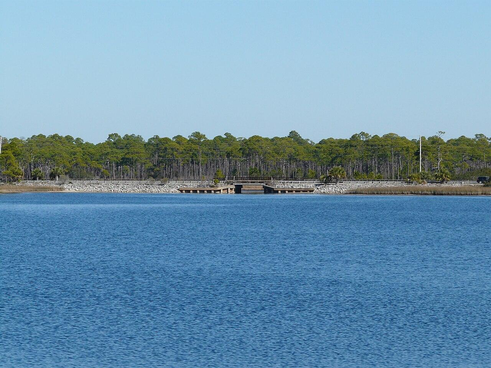

Evacuation routes
A line that falls across a road people need in a storm is a public problem even if the neighborhood behind it is small.
Where to start
This is a suggested focus for a feasibility study. Walton County has not adopted it. No utility has agreed to build it.

Scenic Highway 30A is the coast road of South Walton. Miramar Beach is at the western end, next to Destin. Inlet Beach is at the eastern end, where 30A meets U.S. 98. Residents, visitors, and overhead utilities share a tight strip of land along that road. A first study could ask a limited question: on these corridors, which overhead lines are realistic candidates to move, and what would that take?
The reasons to look here are ordinary ones. The road is scenic and heavily used. Storms come off the Gulf. Trees and poles stand close to the pavement in many blocks. People notice both the outages and the clutter. That does not, by itself, prove these are the cheapest miles in the county. A study would test that.
These are possibilities, not a ranked county list.
A line that falls across a road people need in a storm is a public problem even if the neighborhood behind it is small.
30A is the obvious scenic road. It may not be the only one worth a later phase.
A short span that feeds many homes can matter more than a long rural span. Florida utilities already use outage history and customer impact when they pick neighborhood projects.
Lines with a record of vegetation or storm outages are the ones utilities in Florida have targeted first. A Walton study should ask the utilities for that history rather than guess from memory.
A repaving, drainage, or sidewalk project can be the practical moment to lay conduit, if the timing lines up. See bundling.
A criterion that comes before the others. A corridor can look like one road and still be served by different electric utilities from one end to the other.
Electric service is split. Miramar Beach and the Inlet Beach area are largely Florida Power & Light’s Northwest Florida territory, formerly Gulf Power. Destin, just west of the county line, is in that same FPL territory. Gulf Power merged into FPL effective January 1, 2021, and FPL has served that territory under the FPL name since the start of 2022. Choctawhatchee Electric Cooperative (CHELCO), a member-owned cooperative, says it serves most of Walton County, including much of Santa Rosa Beach, Freeport, and inland Walton. Scenic Highway 30A is not one utility from end to end.
FPL’s undergrounding programs apply to FPL’s lines and to rules set by the Florida Public Service Commission. They do not cover CHELCO’s lines. This site does not describe a CHELCO undergrounding program, and neither company has a project listed here. This site does not have a block-by-block ownership map. A feasibility study would build one. Until then, the name on a power bill is the check for a single address.
Not a construction map. Suggesting 30A and Miramar Beach as a place to start is not a list of streets scheduled for work, and it is not a statement that every pole there should come down.